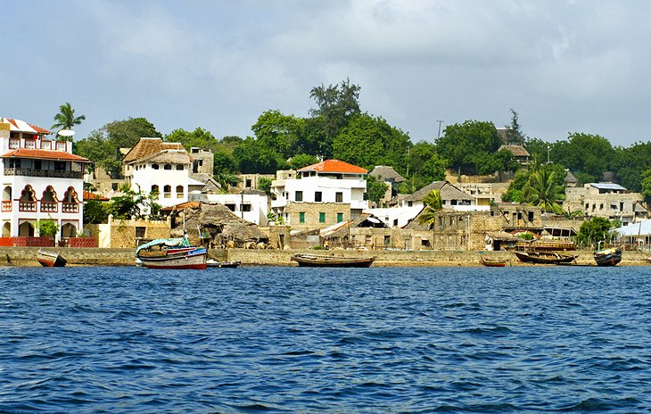

Welcome to Happy Trails Travel Agency
Over the last 20 years, our passionate Happy Trails Travel Agency directors have been providing enriching and educative Kenya safari holidays to our guests through personalized services and attention to detail.
We tailor-make our Kenya holiday packages to give you insider access to the magnificent wildlife, cultural gems, and natural wonders that inhabit our country.
We are always there to provide the most popular and best tropical destinations to our customers across the world.
Our services are cheap and readily available.
Most popula Destinations
1. Denali National Park, Alaska
If climbing the Himalayas is what you dream of doing, check out Denali National Park in Alaska. It’s home to the highest peak in North America at 20,310 feet in height. That’s 10,000 feet shorter than Mount Everest, so it would be a good place to try out your skills. If you aren’t up for that much of a challenge, there are numerous hikes where you can take in views of the mountain from further away, including Horseshoe Lake Trail, which winds for 1.5 miles through spruce and aspen forests to beautiful Horseshoe Lake. Although mountaineering is a popular activity, flightseeing is another great option, or you can also take in the view from a number of scenic overlooks. While you’re here, watch out for wildlife, including the “Big Five,” grizzly bear, wolves, moose, caribou and Dall sheep as well as the chance to glimpse martens, lynx, beavers and fox.
2. Key West, Florida Keys
 Stretching from Biscayne National Park in the north over 125 miles to Key West, this chain of islands hanging off the southern coast of Florida is the best place to experience the Caribbean without leaving the continental United States. The Caribbean-vibe makes the Keys feel a lot more international than back on the mainland. Main Streets are filled with colorful buildings, like in Key West where nightlife and cocktails, beachy boutiques, art galleries, snorkeling, sailing and kayaking all await. When you’re in need of a cultural moment, you can pay a visit to the former home of Ernest Hemingway. Of course, you’ll find plenty of delicious, fresh seafood too.
Stretching from Biscayne National Park in the north over 125 miles to Key West, this chain of islands hanging off the southern coast of Florida is the best place to experience the Caribbean without leaving the continental United States. The Caribbean-vibe makes the Keys feel a lot more international than back on the mainland. Main Streets are filled with colorful buildings, like in Key West where nightlife and cocktails, beachy boutiques, art galleries, snorkeling, sailing and kayaking all await. When you’re in need of a cultural moment, you can pay a visit to the former home of Ernest Hemingway. Of course, you’ll find plenty of delicious, fresh seafood too.
3. Maasai Mara national Reserve
 Maasai Mara National Reserve (also "Masai Mara") is one of Africa's most magnificent game reserves. Bordering Tanzania, the Mara is the northern extension of the Serengeti and forms a wildlife corridor between the two countries.
Maasai Mara National Reserve (also "Masai Mara") is one of Africa's most magnificent game reserves. Bordering Tanzania, the Mara is the northern extension of the Serengeti and forms a wildlife corridor between the two countries.
It's named after the statuesque, red-cloaked Maasai people who live in the park and graze their animals here, as they have done for centuries. In their language, Mara means "mottled," perhaps a reference to the play of light and shadow from the acacia trees and cloud-studded skies on the vast grasslands.
4. Amboseli National Reserve
 Crowned by Mount Kilimanjaro, Africa's highest peak, Amboseli National Reserve is one of Kenya's most popular tourist parks. The name "Amboseli" comes from a Maasai word meaning "salty dust," an apt description for the park's parched conditions.
The reserve is one of the best places in Africa to view large herds of elephants up close. Other wildlife commonly spotted in the park includes big cats, such as lion and cheetah, as well as giraffe, impala, eland, waterbuck, gazelle, and more than 600 species of birds.
Nature lovers can explore five different habitats here, ranging from the dried-up bed of Lake Amboseli, wetlands with sulfur springs, savannah, and woodlands. Look for the local Maasai people who live in the area around the park.
Crowned by Mount Kilimanjaro, Africa's highest peak, Amboseli National Reserve is one of Kenya's most popular tourist parks. The name "Amboseli" comes from a Maasai word meaning "salty dust," an apt description for the park's parched conditions.
The reserve is one of the best places in Africa to view large herds of elephants up close. Other wildlife commonly spotted in the park includes big cats, such as lion and cheetah, as well as giraffe, impala, eland, waterbuck, gazelle, and more than 600 species of birds.
Nature lovers can explore five different habitats here, ranging from the dried-up bed of Lake Amboseli, wetlands with sulfur springs, savannah, and woodlands. Look for the local Maasai people who live in the area around the park.
Tropical Destinations
1. Tsavo National Park
 Kenya's largest park, Tsavo, is sliced in two: Tsavo West and Tsavo East. Together these parks comprise four percent of the country's total area and encompass rivers, waterfalls, savannah, volcanic hills, a massive lava-rock plateau, and an impressive diversity of wildlife.
Midway between Nairobi and Mombasa, Tsavo East is famous for photo-worthy sightings of large elephant herds rolling and bathing in red dust. The palm-fringed Galana River twists through the park, providing excellent game viewing and a lush counterpoint to the arid plains.
Other highlights here include the Yatta Plateau, the world's longest lava flow; Mudanda Rock; and the Lugard Falls, which spill into rapids and crocodile-filled pools.
Tsavo West is wetter and topographically more varied, with some of the most beautiful scenery in the northern reaches of the park. Highlights here are Mzima Springs, a series of natural springs with large populations of hippos and crocodiles; Chaimu Crater, a great spot for seeing birds of prey; and Ngulia Rhino Sanctuary.
Kenya's largest park, Tsavo, is sliced in two: Tsavo West and Tsavo East. Together these parks comprise four percent of the country's total area and encompass rivers, waterfalls, savannah, volcanic hills, a massive lava-rock plateau, and an impressive diversity of wildlife.
Midway between Nairobi and Mombasa, Tsavo East is famous for photo-worthy sightings of large elephant herds rolling and bathing in red dust. The palm-fringed Galana River twists through the park, providing excellent game viewing and a lush counterpoint to the arid plains.
Other highlights here include the Yatta Plateau, the world's longest lava flow; Mudanda Rock; and the Lugard Falls, which spill into rapids and crocodile-filled pools.
Tsavo West is wetter and topographically more varied, with some of the most beautiful scenery in the northern reaches of the park. Highlights here are Mzima Springs, a series of natural springs with large populations of hippos and crocodiles; Chaimu Crater, a great spot for seeing birds of prey; and Ngulia Rhino Sanctuary.
2. Lake Nakuru National Park
Lake Nakuru National Park, in Central Kenya, is famous for its huge flocks of pink flamingos. The birds throng on Lake Nakuru itself, one of the Rift Valley soda lakes that covers almost a third of the park's area.
The park was established in 1961, and more than 450 species of birds have been recorded here, as well as a rich diversity of other wildlife. Lions, leopards, warthogs, waterbucks, pythons, and white rhinos are just some of the animals you might see, and the landscapes range from sweeping grasslands bordering the lake to rocky cliffs and woodland.
Lamu Island

The small island of Lamu, northeast of Mombasa, oozes old-world charm. A UNESCO World Heritage Site, Lamu Old Town is Kenya's oldest continually inhabited settlement, with origins dating back to the 12th century.
Strolling the labyrinthine streets is one of the top things to do here. You can see the island's rich trading history reflected in the buildings. Architectural features from the Arab world, Europe, and India are evident, yet with a discernible Swahili technique. Intricately carved wooden doors, coral stone buildings, hidden courtyards, verandas, and rooftop patios are common features.